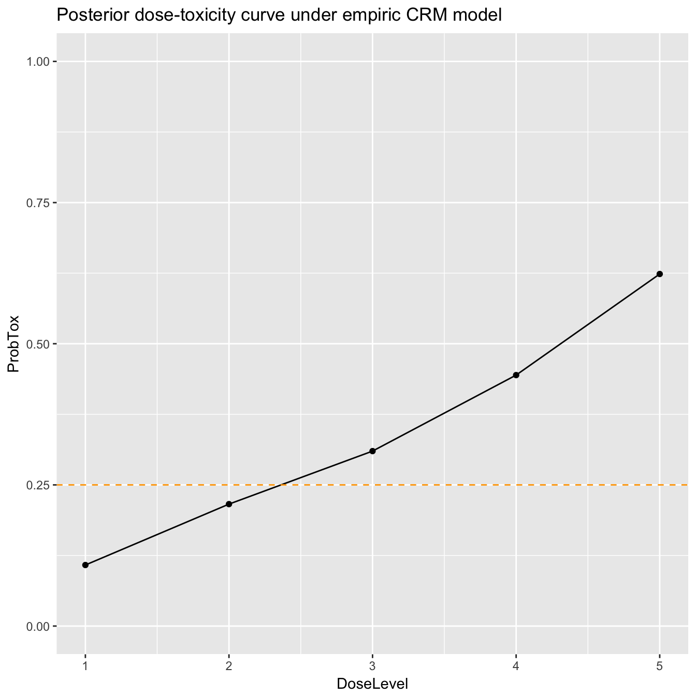
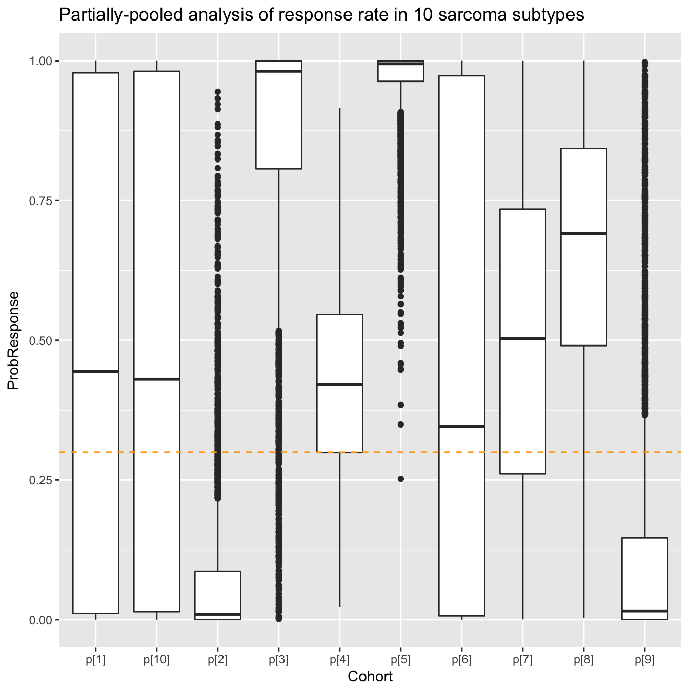

trialr
trialr is a collection of Bayesian clinical trial designs implemented in Stan and R.
Many notable Bayesian designs for clinical trials have been published. However, one of the factors that has constrained their adoption is availability of software. We present here some of the most popular, implemented and demonstrated in a consistent style, leveraging the powerful Stan environment.
It should be stressed that Bayesian trialists are not generally without code. Often authors make available code with their design publication. There are also some fantastic packages that aid the use of certain designs. However, challenges to use still persist. The disparate methods are naturally presented in a style that appeals to the particular author. Features implemented in one package for one design may be missing in another. Sometimes the technology chosen may only be available on one particular operating system, or the chosen technology may have fallen into disuse.
trialr seeks to address these problems. Models are specified in Stan, a state-of-the-art environment for Bayesian analysis. It uses Hamiltonian Monte Carlo to take samples from the posterior distributions. This method is more efficient than Gibbs sampling, for instance, and reliable inference can be performed on a few thousand posterior samples. R, Stan and trialr are each available on Mac, Linux, and Windows, so all of the examples presented here should work on each operating system. Furthermore, Stan offers a very simple method to split the sampling across n cores, taking full advantage of the modern multicore processor in your computer (probably).
The designs implemented in trialr are introduced briefly below, and developed more fully in vignettes. We focus on real-life usage, including:
ggplot graphics.In all examples, we will need to load trialr
library(trialr)The Continual Reassessment Method (CRM) was first published by O’Quigley, Pepe, and Fisher (1990). It assumes a smooth mathematical form for the dose-toxicity curve to conduct a dose-finding trial seeking a maximum tolerable dose. There are many variations to suit different clinical scenarios and the design has enjoyed relatively common use (although nowhere near as common as the ubiquitous and inferior 3+3 design).
We will demonstrate the method using a notional trial example. In a scenario of five potential doses, let us assume that we seek the dose with probability of toxicity closest to 25% where our prior guesses of the rates of toxicity can be represented:
target <- 0.25
skeleton <- c(0.05, 0.15, 0.25, 0.4, 0.6)Let us assume that we have already treated 6 patients at 3 doses:
doses_given <- c(2, 2, 3, 3, 4, 4)
dlt <- c(0, 0, 0, 0, 1, 1)What dose should we give to the 7th patient?
We can fit the data to the popular empiric model
dat <- list(
a0 = 3,
beta_sd = sqrt(1.34),
num_doses = length(skeleton),
skeleton = skeleton,
num_patients = length(doses_given),
tox = dlt,
doses = doses_given
)
samp1 <- rstan::sampling(stanmodels$CrmEmpiricNormalPrior,
data = dat, seed = 123)We can extract the posterior etimates of the probability of toxicity at each dose and perform inference as the Bayesian method would suggest:
prob_tox_samp <- as.data.frame(samp1, 'prob_tox')
prob_tox <- colMeans(prob_tox_samp)
prob_tox
#> prob_tox[1] prob_tox[2] prob_tox[3] prob_tox[4] prob_tox[5]
#> 0.1081169 0.2159618 0.3098591 0.4444842 0.6235105library(ggplot2)
plot_df = data.frame(DoseLevel = 1:length(skeleton),
ProbTox = prob_tox)
ggplot(plot_df, aes(x = DoseLevel, y = ProbTox)) +
geom_point() + geom_line() + ylim(0, 1) +
geom_hline(yintercept = target, col = 'orange', linetype = 'dashed') +
labs(title = 'Posterior dose-toxicity curve under empiric CRM model')
Several variants of the CRM are implemented in ‘trialr’. Further visualisation techniques are demonstrated in the Visualisation in CRM vignette.
EffTox by P. Thall and Cook (2004) is a dose-finding design that uses binary efficacy and toxicity outcomes to select a dose with a high utility score. We present it briefly here but there is a much more thorough examination in the EffTox vignette.
We include a convenience function to get parameters for the EffTox demo scenario of a study with five doses:
dat <- efftox_parameters_demo()but generally you would specify parameters in a list. See the EffTox vignette for full details.
Let us add outcomes for 3 patients:
| Patient | Dose-level | Toxicity | Efficacy |
|---|---|---|---|
| 1 | 1 | 0 | 0 |
| 2 | 2 | 0 | 1 |
| 3 | 3 | 1 | 1 |
dat$num_patients <- 3
dat$eff <- c(0, 1, 1)
dat$tox <- c(0, 0, 1)
dat$doses <- c(1, 2, 3)To get posterior samples, we invoke Stan the model on our dat object. The EffTox model is include in trialr as stanmodels$EffTox. The stanmodels object is compiled when you install trialr and made available when you load the package.
set.seed(123)
samp <- rstan::sampling(stanmodels$EffTox, data = dat, refresh = FALSE)The efftox_process function is provided to perform the calculations on the posterior samples necessary to follow the design published by Thall & Cook:
decision <- efftox_process(dat, samp)For instance, after evaluation of our three patients, the dose advocated for the next group is dose-level 3:
decision$recommended_dose
#> [1] 3This is not surprising because dose 3 has the highest utility score:
decision$utility
#> [1] -0.63555554 0.03034959 0.23273619 -0.04806662 -0.19326826Sometimes, doses other than the maximal-utility dose will be recommended because of the dose-admissibility rules. See the papers for details.
Functions are provided to create useful plots. For instance, it is illuminating to plot the posterior means of the probabilities of efficacy and toxicity at each of the doses on the trade-off contours. The five doses are shown in red. Doses closer to the lower-right corner have higher utility.
efftox_contour_plot(dat, prob_eff = decision$prob_eff, prob_tox = decision$prob_tox)
title('EffTox utility contours')
This example continues in the EffTox vignette.
There are many publications related to EffTox but the two most important are P. Thall and Cook (2004) and P. Thall et al. (2014).
P. F. Thall, Nguyen, and Estey (2008) introduced an extension of EffTox that allows dose-finding by efficacy and toxicity outcomes and adjusts for covariate information. Brock, et al. simplified the method by removing the dose-finding components to leave a design that studies associated co-primary and toxicity outcomes in an arbitrary number of cohorts determined by the basline covariates. They refered to the simplifed design as BEBOP, for Bayesian Evaluation of Bivariate binary Outcomes with Predictive variables.
The investigators implement the design is a phase II trial of pembrolizumab in non-small-cell lung cancer. A distinct feature of the trial is the availability of predictive baseline covariates, the most notwworthy of which is the PD-L1 tumour proportion score, shown by Garon et al. (2015) to be a predictive biomarker.
This example is demonstrated in the BEBOP vignette.
Garon, Edward B, Naiyer a Rizvi, Rina Hui, Natasha Leighl, Ani S Balmanoukian, Joseph Paul Eder, Amita Patnaik, et al. 2015. “Pembrolizumab for the treatment of non-small-cell lung cancer.” The New England Journal of Medicine 372 (21): 2018–28. doi:10.1056/NEJMoa1501824.
O’Quigley, J, M Pepe, and L Fisher. 1990. “Continual reassessment method: a practical design for phase 1 clinical trials in cancer.” Biometrics 46 (1): 33–48. doi:10.2307/2531628.
Thall, Peter F., Hoang Q. Nguyen, and Elihu H. Estey. 2008. “Patient-specific dose finding based on bivariate outcomes and covariates.” Biometrics 64 (4): 1126–36. doi:10.1111/j.1541-0420.2008.01009.x.
Thall, Peter F., J. Kyle Wathen, B. Nebiyou Bekele, Richard E. Champlin, Laurence H. Baker, and Robert S. Benjamin. 2003. “Hierarchical Bayesian approaches to phase II trials in diseases with multiple subtypes.” Statistics in Medicine 22 (5): 763–80. doi:10.1002/sim.1399.
Thall, PF, and JD Cook. 2004. “Dose-Finding Based on Efficacy-Toxicity Trade-Offs.” Biometrics 60 (3): 684–93.
Thall, PF, RC Herrick, HQ Nguyen, JJ Venier, and JC Norris. 2014. “Effective sample size for computing prior hyperparameters in Bayesian phase I-II dose-finding.” Clinical Trials 11 (6): 657–66. doi:10.1177/1740774514547397.